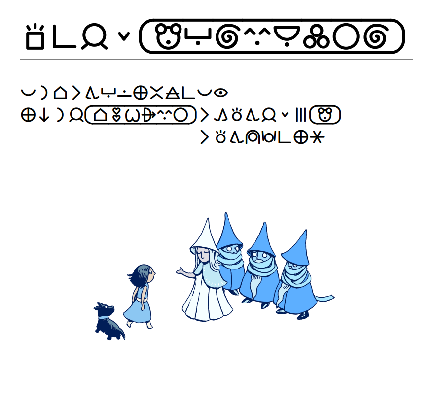

§. toki
§. o toki e nanpa
say "[(number) in vague toki pona]"
o toki e nanpa kepeken nasin wan pi lipu pu.
- "[1 in vague toki pona]" li kama "wan"
- "[2 in vague toki pona]" li kama "tu"
- "[3 in vague toki pona]" li kama "mute"
- "[4 in vague toki pona]" li kama "mute"
- "[47 in vague toki pona]" li kama "mute"
- "[413 in vague toki pona]" li kama "mute"
say "[(number) in specific toki pona]"
o toki e nanpa kepeken nasin tu pi lipu pu.
- "[1 in specific toki pona]" li kama "wan"
- "[2 in specific toki pona]" li kama "tu"
- "[3 in specific toki pona]" li kama "tu wan"
- "[4 in specific toki pona]" li kama "tu tu"
- "[47 in specific toki pona]" li kama "mute mute luka tu"
- "[413 in specific toki pona]" li kama "ale ale ale ale luka luka tu wan"
§. o toki e kulupu ijo
sina ken toki e kulupu pi ijo mute kepeken toki Inli kepeken nimi “[A list of (description of objects)]” kepeken nimi “[is-are a list of (description of objects)]”. sina ken toki e kulupu pi ijo mute kepeken toki pona kepeken nimi ni:
say "[(object anu list of objects) li]"
o toki e kulupu ijo e nimi “li”. o toki e ijo tu kepeken nimi “en”. sitelen Lasina la o toki e ijo mute kepeken nimi “,” kin.
kulupu li “the player” taso la, “the player” li “mi” anu “sina” la, o weka e nimi “li”.
nimi “,” li ike tawa sina la sina ken weka e ona:
Use no commas for subjects.
ni:
The initial appearance of the desk is "supa li suli. [list of things on the desk li] lon supa.".
li ken kama:
- supa li suli. kili, en pan, en poki telo li lon supa.
- supa li suli. kili en pan li lon supa.
- supa li suli. kili li lon supa.
- supa li suli. ala li lon supa.
say "[e (list of objects)]"
o toki e kulupu ijo e nimi “e”. sitelen Lasina la o toki e ijo mute kepeken nimi “,” kin.
sitelen Lasina la nimi “,” li ike tawa sina la sina ken weka e ona:
Use no commas for direct objects.
sitelen pona la, o toki e ijo tu anu ijo mute kepeken poka walo.
ni:
The initial appearance of the desk is "supa li suli. supa li jo [e list of things on the desk].".
li ken kama:
- supa li suli. supa li jo e kili, e pan, e poki telo.
- supa li suli. supa li jo e kili e pan.
- supa li suli. supa li jo e kili.
- supa li suli. supa li jo e ala.
§. o mi anu sina
say "[mi]"
story viewpoint la, o toki e nimi “mi” anu nimi “sina” anu nimi “ona”.
ni li sama nimi “[we]”. musi sina li ante ala e kon story viewpoint la, musi sina li wile ala pali kepeken ni.
§. o toki lili e mi e sina e ijo ante
o lukin e musi lili ni:
Instead of smelling something, say "kon ona li nasa ala.".
>o nena e mi
kon ona li nasa ala.
mi pilin la nimi “ona” li nasa lili lon ni. sina pilin sama mi la, o pali kepeken nimi ni:
say "[ona]"
kon prior named object la, o toki e nimi “ona”, anu nimi “sina” anu nimi “mi”.
(ni li sama nimi “[those]”.)
kepeken ni la...
Instead of smelling something, say "kon [regarding the noun][ona] li nasa ala.".
>o nena e pan
kon ona li nasa ala.
>o nena e soweli suli
kon ona li nasa ala.
>o nena e mi
kon sina li nasa ala.
§. o ante e kon pi nimi “ona”
musi sina li ken kute e nimi “ona”. “set pronouns from (object)” li ante e kon pi nimi “ona”.
§. o toki kepeken sitelen pona
musi sina li wile toki kepeken sitelen pona la o awen lukin e ni.
ni li tan ilo Toki Pona by Vivian Rose:
An orthography is a kind of value. The orthographies are alphabetic and logographic. The current orthography is a orthography that varies.
current orthography is alphabetic la, musi li wile toki kepeken sitelen Lasina.
current orthography is logographic la, musi li wile toki kepeken sitelen pona, kepeken nasin nanpa.
§. taso a seme la musi mi li ken lawa e sitelen??
ilo Inform 7 taso li ken ala lawa e sitelen. taso, ilo CSS li ken.
musi sina li wile toki kepeken sitelen Lasina kepeken sitelen pona kin la, o lukin e ilo Vorple e ilo Bisquixe. ilo ni li ken lawa e sitelen e kule.
musi “anpa ma” li lawa e sitelen kepeken ilo JavaScript kepeken ilo CSS. sina ken lukin e nasin ona. [TODO o kin e lipu: sitelen_pona.html]
§. o poki e nimi
say "[cartouche]"
o open e poki nimi.
say "[end cartouche]"
o pini e poki nimi.
kepeken nimi tu ni la sina ken toki e poki nimi.
When play begins:
say "sina li [if the current orthography is alphabetic]jan Towasi[otherwise][cartouche]tomo olin wile alasa suwi ijo[end cartouche][end if].".
sitelen la ni li kama:
sitelen Lasina la
sina li jan Towasi.
sitelen pona la
sina li jan [tomo olin wile alasa suwi ijo].
tan nimi "if the current orthography is alphabetic" la, musi ni li ken pona kepeken sitelen pona anu sitelen Lasina. taso a, nimi ni li mute ike! sina ken lili e pali kepeken nimi ni:
say "[name]" (ilo Glulx taso)
sitelen pona la, o open e poki nimi.
sitelen Lasina la, o open toki e sitelen nanpa wan taso tan nimi ale. (nimi “lipu [name]kama ante nimi toki anu pilin e[ideographic space]mani ale nimi kama ilo[end name]” li kama nimi “lipu Kantape Manki”)
say "[end name]" (ilo Glulx taso)
sitelen pona la, o pini e poki nimi.
sitelen Lasina la, o pini toki e sitelen nanpa wan taso tan nimi ale.
kepeken nimi tu ni la, sina ken:
When play begins:
say "sina li jan [name]tomo olin wile alasa suwi ijo[end name].".
nasin ni li kama sama.
§. o wan e sitelen tu
say "[~]"
sitelen Lasina la, o toki e walo wan “ ”.
sitelen pona la, o wan e sitelen tu. "toki[~]pona" li kama “toki+pona”.
§. o sitelen lon poka walo
o lukin e ni tan lipu su:

ni la, nimi “li toki tawa meli wawa pi ma lete” li lon poka walo. musi sina li ken sama!
sina ken pali nasa e ni:
say "[ideographic space]"
o toki e walo wan: “ ”.
To say short for Munchkin:
say "[if the current orthography is alphabetic]Mansukin[else][cartouche]mu[end cartouche]".
When play begins:
say "ma ni la jan [name]tomo olin wile alasa suwi ijo[end name] li kama toki tawa jan lili mute [short for Munchkin][if the current orthography is alphabetic][line break][end if][ideographic space][ideographic space][ideographic space][ideographic space][ideographic space][ideographic space][ideographic space][ideographic space][ideographic space][ideographic space][ideographic space]li toki tawa meli wawa pi ma lete.".
sitelen Lasina la
ma ni la jan Towasi li kama toki tawa jan lili mute Mansukin li toki tawa meli wawa pi ma lete.
sitelen pona la
ma ni la jan [tomo olin wile alasa suwi ijo] li kama toki tawa jan lili mute [mu]
li toki tawa meli wawa pi ma lete.
nasin ni li pali. taso nasin ni li nasa ike! sina pali sitelen sama ni la luka sina li pakala. o pali kepeken nimi ni:
say "[lob]"
sitelen pona la, o pali sama “[line break]”. sitelen Lasina la, o ala.
say "[indenting (number)]"
o ante e nanpa pi poka walo (current ideographic indentation level).
say "[indent]"
sitelen pona la, o toki e walo. suli walo li nanpa current ideographic indentation level.
sitelen Lasina la, o ala.
say "[ilob]"
ni li sama nimi “[indent][lob]”.
To meet the Ozians:
say "ma ni la jan [name]tomo olin wile alasa suwi ijo[end name][indenting 11] li kama toki tawa jan lili mute [if the current orthography is alphabetic]Mansukin[else][cartouche]mu[end cartouche][end if][ilob] li toki tawa meli wawa pi ma lete".
ni li lili pona.
...taso a, nimi pi jan Towasi li ken ante la, nanpa “11” li wile seme? ni la, sina ken pali kepeken nimi wawa ni:
dentally say (text)
o toki e nimi. kin la, nanpa current ideographic indentation level li kama suli sama nimi.
lipu ni:
To say short for Munchkin:
say "[if the current orthography is alphabetic]Mansukin[else][cartouche]mu[end cartouche]".
The Kansan is a person. The Kansan can be anonymous. The Kansan can be transgender. The printed name of the Kansan is "jan [if anonymous]lili[otherwise if transgender][name]tomo olin wile ijo jan alasa nasin[end name][otherwise][name]tomo olin wile alasa suwi ijo[end name]".
To meet the Ozians:
dentally say "ma ni la [Kansan] ";
say "li kama toki tawa jan lili mute [short for Munchkin] [ilob]li toki tawa meli wawa pi ma lete".
li ken kama mute a:
ma ni la jan lili li kama toki tawa jan lili mute [mu]
li toki tawa meli wawa pi ma lete
ma ni la jan [tomo olin wile alasa suwi ijo] li kama toki tawa jan lili mute [mu]
li toki tawa meli wawa pi ma lete
ma ni la jan [tomo olin wile ijo jan alasa nasin] li kama toki tawa jan lili mute [mu]
li toki tawa meli wawa pi ma lete
§. ilo pi nasin sitelen tu
musi sina li wile toki kepeken sitelen Lasina kepeken sitelen pona kin la, o awen lukin e ni.
lipu su li toki e toki kepeken nimi “te” kepeken nimi “to”. sina ken sama kepeken nimi tu ni:
say "[te]"
sitelen Lasina la, o toki e nimi “. (nimi “ en nimi " li ante lili. o lukin wawa.)
sitelen pona la, o toki e “te”.
say "[to]"
sitelen Lasina la, o toki e nimi ”. (nimi ” en nimi " li ante lili. o lukin wawa.)
sitelen pona la, o toki e “to”.
kin la, sina ken pilin e ni: sitelen pona la, nimi “?” li nasa lon poka pi nimi “seme”.
sina pilin seme?
“seme?” li ike tawa sina la, o pali kepeken nimi ni:
say "[?]"
sitelen Lasina la, o toki e “?”. sitelen pona la, o ala.
kepeken nimi ni la…
say "jan pona li toki e ni: [te]sina pilin seme[?][to]".
sitelen Lasina la
jan pona li toki e ni: “sina pilin seme?”
sitelen pona la
jan pona li toki e ni: te|sina pilin seme|to
sitelen Lasina la, sina ken wile kipisi e nimi mute kepeken nimi “,”. sitelen pona la, sina ken wile kipisi e nimi mute kepeken ante. kepeken nimi ni la, musi sina li ken toki kepeken nasin tu:
say "[cilob]"
sitelen Lasina la, o toki e “, ”.
sitelen pona la, o toki e "[ilob]".
say "[comma]"
sitelen Lasina la, o toki e “,”.
sitelen pona la, o ala.
kepeken nimi ni la…
say "sina pilin olin. sina lukin e jan pona. [lob]sina olin [indenting 2]e sijelo wawa ona[cilob]e luka seli ona[cilob]e linja pimeja suli ona[cilob]e sinpin suwi ona kin. [paragraph break]taso[comma] sina toki e ni taso: [te]mi pilin pona.[to]".
sitelen Lasina la
sina pilin olin. sina lukin e jan pona. sina olin e sijelo wawa ona, e luka seli ona, e linja pimeja suli ona, e sinpin suwi ona kin.
taso, sina toki e ni taso: “mi pilin pona.”
sitelen pona la
sina pilin olin. sina lukin e jan pona.
sina olin e sijelo wawa ona
e luka seli ona
e linja pimeja suli ona
e sinpin suwi ona kin.
taso sina toki e ni taso: te|mi pilin pona.|to
§. o sitelen lon poka walo lon poka walo
say "[additionally indenting (number)]"
o sewi nanpa e nanpa pi poka walo (current ideographic indentation level).
Instead of listening to the entomologist:
dentally say "jan pipi li toki e ni: [te]";
say "mi kama sona e pipi pi ma ni. [lob]mi alasa [additionally indenting 2]e pipi pi kalama wawa [ilob]e pipi pi kipisi kasi.[to][line break]".
sitelen Lasina la
jan pipi li toki e ni: “mi kama sona e pipi pi ma ni. mi alasa e pipi pi kalama wawa e pipi pi kipisi kasi.”
sitelen pona la
jan pipi li toki e ni: te|mi kama sona e pipi pi ma ni.
mi alasa e pipi pi kalama wawa
e pipi pi kipisi kasi.|to
§. o sitelen e kulupu pi ijo mute lon poka walo
sitelen pona la, nimi “[e (list of objects)]” li ken toki kepeken walo. taso ona li wile e nanpa current ideographic indentation level. nasin tu ni li pona:
The initial appearance of the desk is "supa li suli. [lob]supa li jo [indenting 3][e list of things on the desk].".
anu la:
The initial appearance of the desk is "[fiddly desk appearance]".
To say fiddly desk appearance:
dentally say "supa li suli. [lob]supa li jo ";
say "[e list of things on the desk]".
nasin tu ni li ken kama sama e ni:
supa li suli.
supa li jo e kili
e pan
e pokitelo.
nimi pi supa “desk” li ken ante la nasin nanpa tu li anpa e nasin nanpa wan.
§. o poki e nimi kepeken sitelen supa
sina wile ala wile toki kepeken sitelen supa?
say "[long glyph]" anu say "[LG]" / say "[end long glyph]" anu say "[ELG]"
o supa e sitelen.
“meli wawa pi[long glyph] ma lete[end long glyph]” li kama “meli wawa pi( ma lete)”.
“meli wawa pi[LG] ma lete[ELG]” li sama.
kin la, “meli wawa [pi] ma lete[ELG]” li sama.
§. o toki e toki toki
jan li toki e toki pi jan ante lon musi sina la, sina wile e nimi tu ni.
say "[meta te]"
sitelen Lasina la, o toki e nimi ‘. (nimi ‘ en nimi ' li ante lili. o lukin wawa.)
sitelen pona la, o toki e “.
say "[meta to]"
sitelen Lasina la, o toki e nimi ’. (nimi ’ en nimi ' li ante lili. o lukin wawa.)
sitelen pona la, o toki e ”.
§. o nimi e sina lon lipu pi kama musi
musi ale li jo e lipu pi kama musi, sama ni:
jan Osu pi wawa nasa
musi tan jan Sonja
nanpa 1 / nanpa tenpo li 250214 / kepeken ilo Inform 7 v10.1.2
musi sina li ken toki kepeken sitelen pona la musi sina li wile lawa e nimi logographic story author, sama ni:
"jan Osu pi wawa nasa" by jan Sonja
The logographic story author is "jan [cartouche]sona olin nasa jasima alasa[end cartouche]".
nimi pi musi sina li jo e nimi jan la musi sina li wile lawa e nimi logographic story title kin, sama ni:
The logographic story title is "jan [cartouche]o suli uta[end cartouche] pi wawa nasa".
nasin ni la, lipu pi kama musi li ken pona kepeken sitelen pona:
jan [o suli uta] pi wawa nasa
musi tan jan [sona olin nasa jasima alasa]
nanpa 1 / nanpa tenpo li 250214 / kepeken ilo Inform 7 v10.1.2
 Exampleo ante e sitelen
Exampleo ante e sitelen
jan li musi e musi sina la, jan li ken lawa e sitelen.
musi sina li toki kepeken sitelen Lasina kepeken sitelen pona kin la, jan li ken lawa e sitelen kepeken nimi lawa ni.
Orthography toggling is an action out of world.
Understand "sitelen" or "sitelen pona ala/--" or "sitelen Lasina/Latin ala/--" or "font" or "orthography" or "sp" or "sl" as orthography toggling.
Carry out orthography toggling (this is the default orthography toggling rule):
if the current orthography is alphabetic:
now the current orthography is logographic;
now the command prompt is the appropriate command prompt;
say "tenpo ni la musi ni li toki kepeken[long glyph] sitelen[~]pona[end long glyph].[paragraph break]";
if glyph composition enabled is true:
say "[te]toki pona[to] li sama [te]toki[~]pona[to].[line break]
ni li ike [tawa] sina[ELG] la o [te][command style]sitelen tu[roman type][to].";
otherwise:
say "sitelen tu ken ala wan.[line break]
ni li ike [tawa] sina[ELG] la o [te][command style]sitelen tu[roman type][to].[paragraph break]";
if long glyphs enabled is true:
say "[te]kulupu pi waso lili li mu lon tomo waso.[to] li sama [te]kulupu [pi] waso lili[ELG] li mu [lon] tomo waso[ELG].[to].[line break]
ni li ike [tawa] sina[ELG] la[comma] o [te][command style]sitelen supa[roman type][to].";
otherwise:
say "sitelen ken ala supa.[line break]
ni li ike [tawa] sina[ELG] la[comma] o [te][command style]sitelen supa[roman type][to].";
otherwise:
now the current orthography is alphabetic;
now the command prompt is the appropriate command prompt;
say "tenpo ni la, musi ni li toki kepeken sitelen Lasina.".
Long glyph toggling is an action out of world.
Understand "sitelen palisa ala/--" as long glyph toggling.
Carry out long glyph toggling (this is the default long glyph toggling rule):
if the current orthography is alphabetic:
say "sina ken ala ante e sitelen palisa tan ni: tenpo ni la, musi ni li kepeken sitelen Lasina.
sina [te][command style]sitelen pona[roman type][to] la musi ni li kepeken sitelen pona.";
otherwise:
if long glyphs enabled is true:
now long glyphs enabled is false;
say "ante. tenpo ni la sitelen pi musi ni li ken ala palisa.";
otherwise:
now long glyphs enabled is true;
say "ante. tenpo ni la sitelen [pi] musi ni li ken palisa.
[te]sitelen [pi] musi ni[ELG][to] li sama [te]sitelen pi musi ni[to].
[te]pipi li mu [lon] kasi[ELG][to] li sama [te]pipi li mu lon kasi[to].".
Glyph composition toggling is an action out of world.
Understand "sitelen wan/tu" as glyph composition toggling.
Carry out glyph composition toggling (this is the default glyph composition toggling rule):
if the current orthography is alphabetic:
say "[roman type]tenpo ni, musi ni li kepeken sitelen Lasina.
sina [te][command style]sitelen pona[roman type][to] la musi ni kepeken sitelen pona.";
otherwise:
if glyph composition enabled is true:
now glyph composition enabled is false;
say "ante. tenpo ni la sitelen tu ken ala wan.
[te]toki pona[to] li sitelen tu taso.";
otherwise:
now glyph composition enabled is true;
say "ante. tenpo ni la sitelen tu ken wan.
[te]toki pona[to] li sama [te]toki[~]pona[to].".